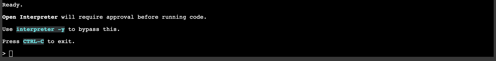

頑張らないために頑張る
ゆるく頑張ります
Google ColabでOpen InterpreterをCode Llamaで動かす
概要
相変わらず話題のOpen Interpreter（以下、OI）を、今回はGoogle Colab上で動かしてみようというお話です。相変わらず、ローカルやColab上の限定された環境での動作を想定しているので、Code Llama（以下、Llama）を利用します。
以前の記事では、OIをは手元にあったショボショボPCを使ってローカルで動作させることをやってみました。このPCは、CPUはともかくロクなGPUも積んでないようなPCなので、OIを動作させたところでその真価を発揮できたかと言われると甚だ疑問です。そこで、「GPUをもうちょっと盛大に使ってOIを動作させたいー」という欲求を満たすため、Google Colaboratory（以下、Colab）を使います。
Google Colaboratoryとは
最初にGoogle Colaboratory（通称：Colab）について触れておきます。Colabは、Googleが提供するクラウドベースのPython開発環境です。
Colab は、学生からデータ サイエンティスト、AI リサーチャーまで、皆さんの作業を効率化します。
- ブラウザ上でJupyter Notebookを記述し実行できる
- 環境構築が不要
- GPUに料金なしでアクセス可能
- 簡単に共有可能
ColabではJupyter notebookの形式で基本的に記述するため、Pythonの理解がある人はすぐ使いこなせるでしょう。notebookは、実行可能コードやMarkdownによるテキストを、1つのドキュメントでそれぞれ記述できます。Colabで作成したnotebookは、GoogleドライブにColabのドキュメントとして保存されます。また、作成したドキュメントはリンクなどにより簡単に共有が可能で、コメントの記入や編集をしてもらうことも可能です。とりあえず作ってみると、使用感がわかるかと思います。
環境
先述のとおり、今回はColabを利用します。そのため、OIを動作させる環境の準備は、「Googleアカウントを取得してColabにログインする」で終わりです。あとは必要はライブラリやパッケージをインストールし、実行するだけです。この簡単さがColabの最大の利点ですね。
なお、Colabには無料プランと有料プランで使えるリソースに差があります。また、無料プランだとGPUが割り当てられるかは結構運任せで、だいたい割り当ててもらえません。CPUオンリーでも動作は可能ですが、それはローカルPCでもできることなので、今回はしっかりGPUを使いたいわけです。とは言え、先述のとおり無料プランだとGPUが割り当てられるかは確定しませんし、だいたいダメです。運に頼らずGPUを使いたいので、ここは素直に課金します。おかねのちからってすげー！
まぁ、課金するっていっても「Pro」です。さすがに「Pro＋」はオーバースペックじゃね・・・？いや、石油王とかならワンチャン？
ちなみにGPUが割り当てられると、上記のようにどんなGPUが割り当てられているか、CPUなどのリソースがどの程度利用されているかが小さく表示されます。ここではV100というGPUが割り当てられています。
OIを実行する方法
OIのインストール
これは簡単です。pip installするだけですから。
!pip install open-interpreter上記のコードを入力して実行します。少し待てば実行が終わり、ライブラリがインストールされたはずです。
OIの実行・・・ができない
OIをインストールしたので、早速実行するぜ！・・・と行きたいところなんですが、残念。使えません。
実は、ここまで言っておいてなんですが、Colab上でCode Llamaで動かそうとしても動作しません。というか、そもそもOIの起動ができません。それはLlamaを実行するのに必要な--localオプションを付与した際の環境設定で、キー入力を受け付けずパラメータを指定できないからです。
!interpreter --local
[?] Parameter count (smaller is faster, larger is more capable): 7B
> 7B
13B
34BOIをLlamaで動作させる場合、上記のようにLlamaのオプション指定するよう表示され、任意の選択肢1つを指定します。するのですが、その際はカーソルキーで選択してから改行キーを押す必要があります。単純にColab上で!interpreter --localを実行してしまうと、Llamaのオプション設定をしたくともColabがキー入力を受け付けてくれません。そのため、Llamaのオプション指定ができない＝先に進まない＝Colab上でLlamaによるOIが実行できないとなるわけです。
また、OI公式を確認したところ、Open InterpreterのCode Llama利用については「Colabでの実行をサポートしていない」と書いてあります。
ターミナルの導入
とはいえ、ここで引き下がったらエンジニアの名折れです（暴言）。サポートされてないってだけで、完全にダメってことじゃないでしょうからどうにかなるはずです。なんとかなれー！
じゃあ、キー入力を受け付けてくれるにはどうするか？が問題になります。ここではColab上で動作するターミナルを導入します。
!pip install colab-xterm
%load_ext colabxterm
%xterm最後の%xtermを実行すると、Colab上にターミナルが表示されます。ターミナルが表示されたら、改めてOIを起動します。
interpreter --local上記のコマンドをColab上のターミナルに入力して、実行します。ターミナルへの入力にタイムラグがあるので入力しにくいとは思いますが、そこは気合と根性あるいはノリと勢いでどうにかしましょう。今度はキー入力を受け付けてくれるので、Llamaの設定値を指定できます。
使ってみる
早速Colab上でLlamaのOIを使ってみます。ローカル環境がショボショボだったせいで、容量の小さいモデルを利用する必要があった前回とは違い、今回はそこそこのGPUメモリもあります。
なお、notebookなので、以下のコードはすべて「セル」と呼ばれる領域に記述して実行します。ここではセルの追加方法などは割愛しますが、ググれば結構いろいろ出てきます。
!pip install open-interpreter
!pip install colab-xterm
%load_ext colabxterm
%xterm先述のとおり、上記のコードをセルに入力して実行しておきます。

すると、上記のようにColabの画面にコンソールのような画面が表示されます。以降は、このコンソール画面に入力していくことになります。
interpreter --local表示されているコンソールに上記のコマンドを入力し実行することで、OIの環境を構築できます。

必要なファイルは順次自動的にインストールされますので、しばらく待ちます。結構待ちます。

上記のようにプロンプトが表示されたら準備完了です。使い倒しましょう。
まとめ
今回はColabでOIを実行してみました。
とりあえずOIの雰囲気や操作感を体験してみるには手っ取り早いうえ、Pro以上のプランではそこそこリッチにGPUを利用できるため、自分のマシンがショボくてもなんとかなります。なってくれ。
ColabはOIだけが動作するわけではないので、Colabを使ってみるきっかけにしてもいいかもしれません。Colab自体はいろんなことができるかなり優秀な環境なので、どんどん使ってみることをオススメします。